SELINA YANG · REVISION 03
SY / 错位
保留原标志的字母关系，重新绘制笔画与轮廓。

去掉古典装饰，
让字母更有力度。
移除椭圆与衬线，保留 S 在左上、Y 在右下的关系。
笔画加实、端部斜切，用银白色衔接黑色光学首屏。

32 / 24 / 16 PX
放到网站左上角
SELINA YANGAI PRODUCT DESIGNER
导航视觉样稿 · 可切换独立标志与姓名组合
保留原标志的字母关系，重新绘制笔画与轮廓。

移除椭圆与衬线，保留 S 在左上、Y 在右下的关系。
笔画加实、端部斜切，用银白色衔接黑色光学首屏。

导航视觉样稿 · 可切换独立标志与姓名组合